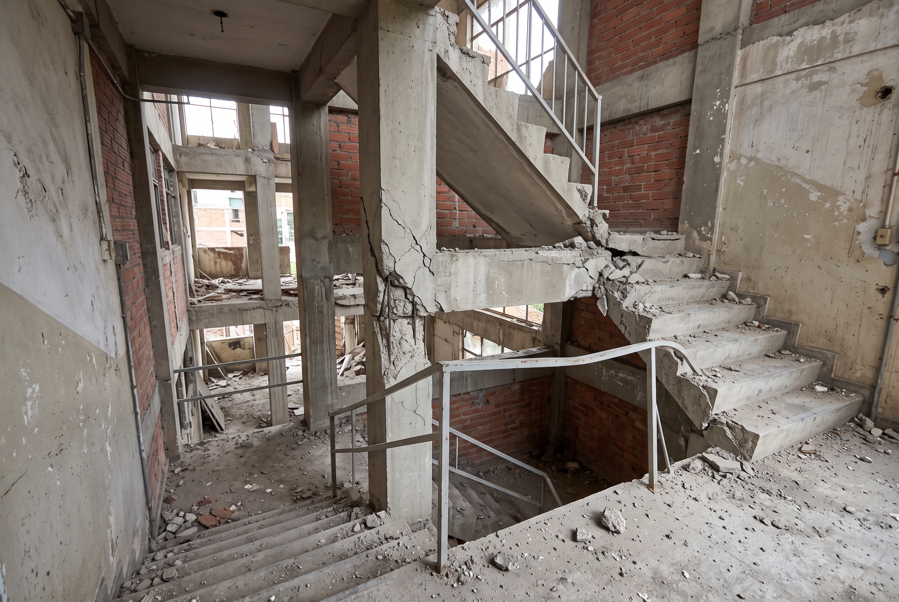
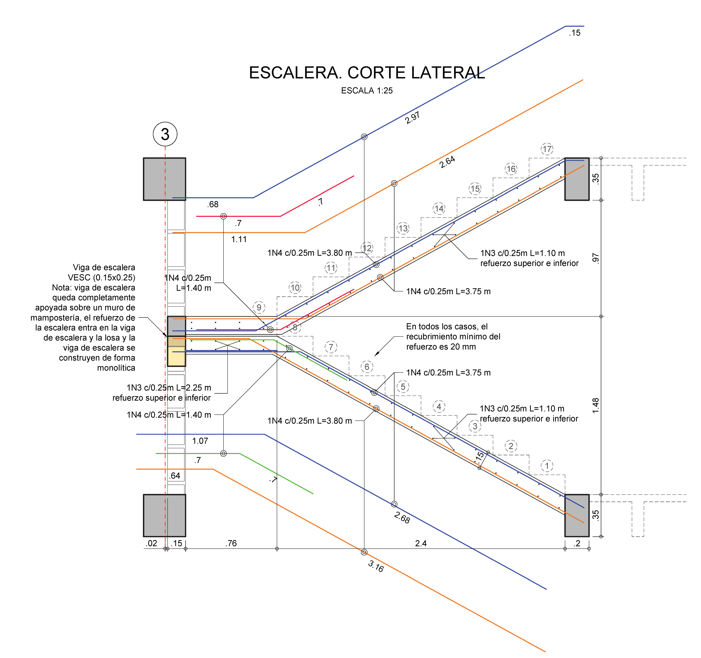

<link rel="stylesheet" href="https://www.w3schools.com/w3css/4/w3.css">
<link rel="stylesheet" href="https://cdnjs.cloudflare.com/ajax/libs/font-awesome/4.7.0/css/font-awesome.min.css">

<script>
    MathJax = {
        tex: {
            inlineMath: [['\\(', '\\)'], ['$', '$']],
            displayMath: [['$$', '$$'], ['\\[', '\\]']]
        }
    };
</script>
<script async src="https://cdn.jsdelivr.net/npm/mathjax@3/es5/tex-mml-chtml.js"></script>

<style>
    /* --- ESTILOS DEL BANNER DE ESCALERAS --- */
    .hero-banner {
        position: relative;
        min-height: 240px;
        background: url('../assets/Esc00.png') no-repeat center center; 
        background-size: cover;
        border-radius: 12px 12px 0 0;
    }
    
    .hero-overlay {
        min-height: 240px;
        background: linear-gradient(rgba(26, 37, 48, 0.68), rgba(26, 37, 48, 0.92));
        padding: 40px 24px;
        text-align: center;
        display: flex;
        flex-direction: column;
        align-items: center;
        justify-content: center;
    }

    .hero-eyebrow {
        color: var(--naranja-estructural);
        font-weight: 700;
        font-size: 0.9rem;
        letter-spacing: 2px;
        text-transform: uppercase;
        margin-bottom: 10px;
    }

    .hero-title {
        color: #ffffff;
        font-size: 2.6rem;
        font-weight: 800;
        margin: 0;
        line-height: 1.2;
        border: none;
        padding: 0;
    }

    .hero-subtitle {
        color: #c3ccd5;
        font-size: 1.1rem;
        margin-top: 15px;
        max-width: 600px;
    }

    /* --- ESTILOS GENERALES --- */
    :root {
        --azul-profundo: #1A2530;
        --naranja-estructural: #E67E22;
        --gris-claro: #F4F5F7;
        --texto-secundario: #536171;
    }

    * { box-sizing: border-box; }

    body {
        margin: 0;
        background: var(--gris-claro);
        color: var(--azul-profundo);
        font-family: "Segoe UI", Arial, sans-serif;
        line-height: 1.65;
    }

    .page {
        max-width: 1180px;
        margin: 28px auto;
        background: #fff;
        box-shadow: 0 8px 28px rgba(26, 37, 48, 0.12);
        border-radius: 12px;
        overflow: hidden;
    }

    .site-header {
        padding: 32px 24px 26px;
        text-align: center;
        color: #fff;
        background: var(--azul-profundo);
    }

    .site-header img { max-width: 220px; height: auto; }
    
    h1 { margin: 8px auto; max-width: 900px; line-height: 1.2; }
    
    .learning-path {
        display: flex;
        justify-content: center;
        align-items: center;
        flex-wrap: wrap;
        gap: 8px;
        margin-top: 24px;
        color: #b8c2cc;
        font-size: 0.85rem;
    }

    .path-item {
        padding: 5px 12px;
        border: 1px solid #52606d;
        border-radius: 20px;
    }

    .path-item.active {
        border-color: var(--naranja-estructural);
        color: #fff;
        background: rgba(230, 126, 34, 0.18);
    }

    .content { padding: 34px clamp(18px, 5vw, 54px); }

    h2 {
        margin: 38px 0 14px;
        padding-bottom: 8px;
        border-bottom: 2px solid var(--naranja-estructural);
        color: var(--azul-profundo);
        font-size: 1.55rem;
    }

    h3 { color: var(--azul-profundo); font-size: 1.15rem; }
    p { margin: 0 0 14px; }
    .muted { color: var(--texto-secundario); }
    
    .callout {
        margin: 18px 0;
        padding: 16px 18px;
        border-left: 5px solid var(--naranja-estructural);
        border-radius: 6px;
        background: #fdf6f0;
    }

    .grid {
        display: grid;
        grid-template-columns: repeat(2, minmax(0, 1fr));
        gap: 18px;
    }

    .card {
        height: 100%;
        padding: 18px;
        border: 1px solid #e1e5e9;
        border-radius: 9px;
        background: #fff;
    }

    .card h3 { margin-top: 0; }
    
    .tool-card {
        margin: 24px 0;
        padding: 24px;
        border-radius: 10px;
        color: #fff;
        background: var(--azul-profundo);
    }

    .tool-card h2 {
        margin-top: 0;
        border: 0;
        color: #fff;
    }

    .button {
        display: inline-block;
        margin-top: 8px;
        padding: 11px 20px;
        border-radius: 5px;
        color: #fff;
        background: var(--naranja-estructural);
        font-weight: 700;
        text-decoration: none;
    }

    .button:hover { background: #c96816; color: #fff; }

    /* --- ESTILOS MEJORADOS PARA LA TABLA DE DIAGNÓSTICO --- */
    .table-wrap {
        overflow-x: auto;
        margin: 22px 0;
        border: 1px solid #d9dee3;
        border-radius: 10px;
        box-shadow: 0 5px 16px rgba(26, 37, 48, 0.07);
        max-width: 100%;
        -webkit-overflow-scrolling: touch;
    }

    .table-wrap table {
        width: 100%;
        min-width: 620px;
        border-collapse: separate;
        border-spacing: 0;
        font-size: 0.94rem;
    }

    .table-wrap th {
        background: #1A2530;
        color: #fff;
        padding: 15px 14px;
        border: 0;
        border-bottom: 3px solid #E67E22;
        text-align: left;
    }

    .table-wrap td {
        padding: 14px;
        border: 0;
        border-bottom: 1px solid #e1e5e9;
        vertical-align: top;
    }

    .table-wrap tbody tr:nth-child(even) {
        background: #F4F5F7;
    }

    .table-wrap tbody td:first-child {
        font-weight: 650;
        color: #1A2530;
        border-left: 4px solid #E67E22;
    }

    .table-wrap tbody tr:last-child td {
        border-bottom: 0;
    }

    ul { padding-left: 22px; }
    li { margin-bottom: 7px; }

    .image-slot {
        margin: 18px 0;
        padding: 12px;
        border: 1px dashed #9aa5b1;
        border-radius: 8px;
        background: #fafbfc;
        text-align: center;
    }

    .image-slot img {
        display: block;
        width: 100%;
        max-width: 100%;
        height: auto;
        margin: 0 auto;
    }

    .image-caption { margin: 8px 0 0; color: var(--texto-secundario); font-size: 0.9rem; }

    .reference-list { padding-left: 20px; }
    .discussion { margin-top: 32px; padding-top: 10px; border-top: 1px solid #d9dee3; }

    footer {
        padding: 28px 18px;
        text-align: center;
        color: var(--texto-secundario);
        background: var(--gris-claro);
    }

    footer img { max-width: 170px; height: auto; margin-bottom: 10px; }

    /* --- AJUSTE RESPONSIVO PARA ZOOM Y PANTALLAS ESTRECHAS --- */

    /* Evitar desbordamientos de texto dentro de tarjetas y columnas */
    .content,
    .card,
    .tool-card,
    .callout {
        min-width: 0;
        overflow-wrap: anywhere;
    }

    /* Las tarjetas pasan a una columna cuando ya no caben cómodamente */
    @media (max-width: 900px) {
        .grid {
            grid-template-columns: minmax(0, 1fr);
        }

        .content {
            padding: 24px clamp(14px, 3vw, 30px);
        }

        .hero-title {
            font-size: clamp(1.7rem, 4vw, 2.6rem);
        }

        .hero-subtitle {
            font-size: 1rem;
        }
    }

    /* Mejor lectura en ventanas muy estrechas o con zoom elevado */
    @media (max-width: 480px) {
        .hero-overlay {
            padding: 32px 16px;
        }

        .hero-banner {
            min-height: 200px;
        }

        .hero-title {
            font-size: 1.65rem;
        }

        .hero-eyebrow {
            font-size: 0.75rem;
            letter-spacing: 1px;
        }

        .content {
            padding: 20px 14px;
        }

        h2 {
            font-size: 1.3rem;
            line-height: 1.3;
        }

        h3 {
            font-size: 1.08rem;
        }

        .card,
        .tool-card,
        .callout {
            padding: 16px;
        }

        .learning-path {
            padding: 14px !important;
            gap: 6px;
        }

        .path-item {
            padding: 5px 9px;
            font-size: 0.78rem;
        }

        .button {
            max-width: 100%;
            white-space: normal;
            text-align: center;
        }
    }

</style>

<header>
    <!-- BANNER CON IMAGEN DE FONDO -->
    <div class="hero-banner">
        <div class="hero-overlay">
            <div class="hero-eyebrow">Diseño de Hormigón Armado II</div>
            <h1 class="hero-title">Análisis y Diseño de Escaleras</h1>
            <p class="hero-subtitle">Criterio Estructural • Idealización, comportamiento sísmico y detallado constructivo</p>
        </div>
    </div>

    <!-- RUTA DE APRENDIZAJE ORIGINAL -->
    <nav class="learning-path" aria-label="Ruta de aprendizaje" style="padding: 20px 0; background: #fff; border-bottom: 1px solid #e1e5e9;">
        <span class="path-item active">01. Idealización</span>
        <span aria-hidden="true" style="color: #b8c2cc;">›</span>
        <span class="path-item">02. Análisis</span>
        <span aria-hidden="true" style="color: #b8c2cc;">›</span>
        <span class="path-item">03. Diseño y detallado</span>
        <span aria-hidden="true" style="color: #b8c2cc;">›</span>
        <span class="path-item">04. Taller</span>
    </nav>
</header>

<main class="content">
    <section id="introduccion">
        <h2>1. Planteamiento estructural</h2>
        <p>El diseño de una escalera comienza por definir qué elementos reciben las cargas y cómo las transmiten a la estructura principal. Antes de interpretar resultados, define la geometría, la luz de análisis, la continuidad y las condiciones de apoyo.</p>
        <p>El modelo debe representar la trayectoria resistente prevista; no basta con que produzca diagramas o converja numéricamente.</p>
        
        <div class="callout">
            <strong>Decisión de ingeniería:</strong> Contrasta siempre el modelo con los planos y con el detalle constructivo. Una hipótesis de apoyo o de carga distinta a la realidad cambiará drásticamente las solicitaciones.
        </div>

        <div class="image-slot">
            
            <p class="image-caption">Geometría, apoyos y dimensiones de referencia.</p>
        </div>
    </section>

    <section id="tipologias">
        <h2>2. Tipologías y camino de cargas</h2>
        <div class="grid">
            <article class="card">
                <h3>Escalera recta apoyada lateralmente</h3>
                <p>Los peldaños reciben las cargas y las transfieren a los elementos de apoyo. Las zancas (vigas inclinadas laterales) transmiten luego esas reacciones hacia vigas, muros o columnas del sistema estructural.</p>
            </article>
            <article class="card">
                <h3>Escalera en U con descanso</h3>
                <p>La respuesta depende de si el descanso cuenta con un apoyo intermedio directo. Si no lo tiene, rampas y descanso trabajan como un conjunto continuo; el quiebre y sus conexiones requieren atención especial.</p>
            </article>
        </div>

        <h3>Seguir la carga hasta el apoyo</h3>
        <ol>
            <li><strong>Acciones aplicadas:</strong> peso propio, acabados, barandas y carga viva.</li>
            <li><strong>Elemento receptor:</strong> peldaño, losa inclinada o descanso.</li>
            <li><strong>Elementos de transferencia:</strong> zancas, vigas o muros.</li>
            <li><strong>Apoyos finales:</strong> elementos que entregan las fuerzas a la cimentación.</li>
        </ol>

        <div class="callout" style="background: #eef2f5; border-left-color: #536171; color: var(--azul-profundo);">
            <strong>Control de Cargas:</strong> Distingue claramente si la carga está distribuida por unidad de área, por longitud inclinada o por proyección horizontal. Un error en la base de medida distorsiona todo el análisis.
        </div>

        <div class="image-slot">
            
            <p class="image-caption">Comparación de tipologías y rutas de transferencia de cargas.</p>
        </div>
    </section>

    <section id="herramienta">
        <div class="tool-card">
            <h2>3. Herramienta de análisis para la clase</h2>
            <p><strong>Instrucción:</strong> Modifica la geometría y los apoyos. Antes de interpretar los diagramas, predice qué debería cambiar en la estructura y por qué.</p>
            <a class="button" href="https://gqo2qxdgw7wxriaugbg8xp.streamlit.app/#ing-rafael-antonio-correa-melano" target="_blank" rel="noopener">Abrir análisis rápido de escaleras <i class="fa fa-arrow-right" aria-hidden="true"></i></a>
        </div>
        <p class="muted">La aplicación es una herramienta de exploración académica. No sustituye una verificación normativa completa ni la memoria de cálculo.</p>
    </section>

    <section id="diseno">
        <h2>4. Puntos críticos de diseño</h2>
        <div class="grid">
            <article class="card">
                <h3>Flexión y momento</h3>
                <p>Identifica la cara traccionada y detalla el acero en consecuencia. La condición de apoyo y la continuidad determinan la ubicación de los momentos máximos positivos y negativos.</p>
                <div class="callout">Resistencia requerida: \(\phi M_{n} \geq M_{u}\)</div>
            </article>
            <article class="card">
                <h3>Cortante y efecto axial</h3>
                <p>La inclinación genera fuerzas axiales que interactúan con la capacidad a cortante (\(V_{c}\)). <strong>Cuidado:</strong> la tracción reduce la resistencia; en ese caso, \(N_{u}\) debe ingresar negativo en la fórmula.</p>
                <ul class="muted" style="font-size: 0.9rem; margin-top: 5px; margin-bottom: 15px;">
                    <li>Ecuación clásica: $$V_{c} = 0.17\sqrt{f'_{c}}bd$$</li>
                    <li>Con efecto axial: $$V_{c} = 0.17\sqrt{f'_{c}}bd\left(1+\frac{0.29N_{u}}{A_{g}}\right)$$</li>
                </ul>
                <p style="font-size: 0.9rem;">Si \(V_{u} > \phi V_{c}\), la solución constructiva típica en losas es aumentar el espesor (\(h\)), obligando a recalcular el peso propio.</p>
            </article>
            <article class="card">
                <h3>Deflexión y servicio</h3>
                <p>Revisa la combination de servicio aplicable, la rigidez efectiva y los efectos diferidos para evitar deformaciones, fisuración excesiva o vibraciones intolerables.</p>
            </article>
            <article class="card">
                <h3>Verificaciones de control</h3>
                <ul>
                    <li>Equilibrio entre reacciones y cargas aplicadas.</li>
                    <li>Signos y unidades de cada diagrama.</li>
                    <li>Consistencia lógica de la deformada según los apoyos.</li>
                </ul>
            </article>
        </div>
    </section>

    <section id="sismo">
        <h2>5. Comportamiento sísmico y mitigación</h2>
        <p>Una escalera conectada rígidamente puede comportarse como un puntal diagonal, restringiendo el desplazamiento relativo entre pisos y alterando la respuesta global del edificio.</p>
        
        <div class="grid">
            <article class="card">
                <h3>La condición de columna corta</h3>
                <p>Si un descanso restringe rígidamente una columna, existe la posibilidad de reducir su longitud libre, aumentando drásticamente su demanda local. Esto depende de la geometría y debe comprobarse en el modelo global.</p>
            </article>
            <article class="card">
                <h3>Alternativas de mitigación</h3>
                <p>Puedes incluir la escalera en el modelo global para diseñar con la fuerza real que transmite, o utilizar juntas y apoyos deslizantes para aislar sus desplazamientos sin comprometer la estabilidad vertical.</p>
            </article>
        </div>

        <div class="image-slot">
            
            <p class="image-caption">Mecanismo de interacción de la escalera con el desplazamiento lateral del edificio.</p>
        </div>
    </section>

    <section id="detallado">
        <h2>6. Tarjetas de diagnóstico: Errores y soluciones</h2>
        <div class="table-wrap">
            <table>
                <thead>
                    <tr>
                        <th>Diagnóstico a revisar</th>
                        <th>Consecuencia posible</th>
                        <th>Acción requerida de diseño</th>
                    </tr>
                </thead>
                <tbody>
                    <tr>
                        <td>01 · Geometría y apoyos</td>
                        <td>El modelo produce solicitaciones y deformaciones que no representan la estructura construida.</td>
                        <td>Comprobar y definir ejes, luces de análisis, caras de apoyo y continuidad antes de analizar.</td>
                    </tr>
                    <tr>
                        <td>02 · Quiebre del tramo</td>
                        <td>Concentración de esfuerzos, fisuración o desprendimiento local del recubrimiento en la zona cóncava.</td>
                        <td>Resolver la continuidad cruzando el acero, detallando anclajes y refuerzo local según normativa.</td>
                    </tr>
                    <tr>
                        <td>03 · Anclajes y empalmes</td>
                        <td>Incapacidad de transferir y desarrollar la fuerza de tracción requerida entre acero y concreto.</td>
                        <td>Especificar longitudes, ubicación y condiciones de anclaje precisas en los planos estructurales.</td>
                    </tr>
                    <tr>
                        <td>04 · Posición del refuerzo</td>
                        <td>El acero queda ubicado fuera de la zona traccionada, dejando la sección vulnerable al colapso.</td>
                        <td>Relacionar rigurosamente los diagramas de momento con las secciones y el despiece final.</td>
                    </tr>
                    <tr>
                        <td>05 · Cargas omitidas</td>
                        <td>Subestimación grave de las solicitaciones reales de servicio y diseño último.</td>
                        <td>Incluir y documentar rigurosamente acabados, peldaños, barandas y demás cargas permanentes.</td>
                    </tr>
                </tbody>
            </table>
        </div>

        <div class="image-slot">
            
            <p class="image-caption">Detalle constructivo del quiebre: continuidad geométrica, anclaje y posición correcta del refuerzo.</p>
        </div>
    </section>

    <section id="taller">
        <h2>7. Taller aplicado: referencia de trabajo</h2>
        <p>El taller integra idealización, análisis, diseño, servicio, comportamiento sísmico y detallado. Use los planos y casos de estudio del curso para desarrollar una propuesta trazable desde la geometría hasta el despiece.</p>
        <div class="callout">
            <strong>Entregables mínimos:</strong> esquema de geometría y apoyos; cargas y combinaciones; modelo y diagramas; verificaciones de flexión, cortante y deflexión; discusión sísmica cuando corresponda; plano de refuerzo con anclajes y detalles del descanso.
        </div>
        
        <h3>Material de referencia del curso</h3>
        <ul class="reference-list">
            <li><code>Escalera Recta.pdf</code></li>
            <li><code>Escalera U.pdf</code></li>
            <li><code>Escalera U auto.pdf</code></li>
            <li>Reglamento NSR-10 y referencias vigentes adoptadas en el curso.</li>
        </ul>
    </section>

    <section class="discussion" id="comentarios">
        <h2>Consultas y discusión académica</h2>
        <p class="muted">Use este espacio para preguntas sobre los modelos, las hipótesis y los detalles tratados en clase.</p>
        <script src="https://utteranc.es/client.js"
            repo="rafacorreacolombia/Hormigon-armado"
            issue-term="pathname"
            theme="github-light"
            crossorigin="anonymous"
            async>
        </script>
    </section>
</main>

<footer>
    
    <p><strong>Rafael Antonio Correa Melano</strong><br>
    Ingeniería Civil · Universidad Industrial de Santander</p>
    <p><strong>Criterio Estructural</strong><br>
    Bucaramanga, Colombia</p>
</footer>
